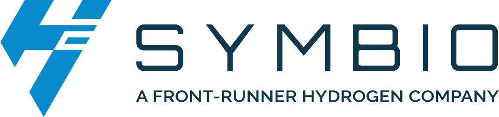
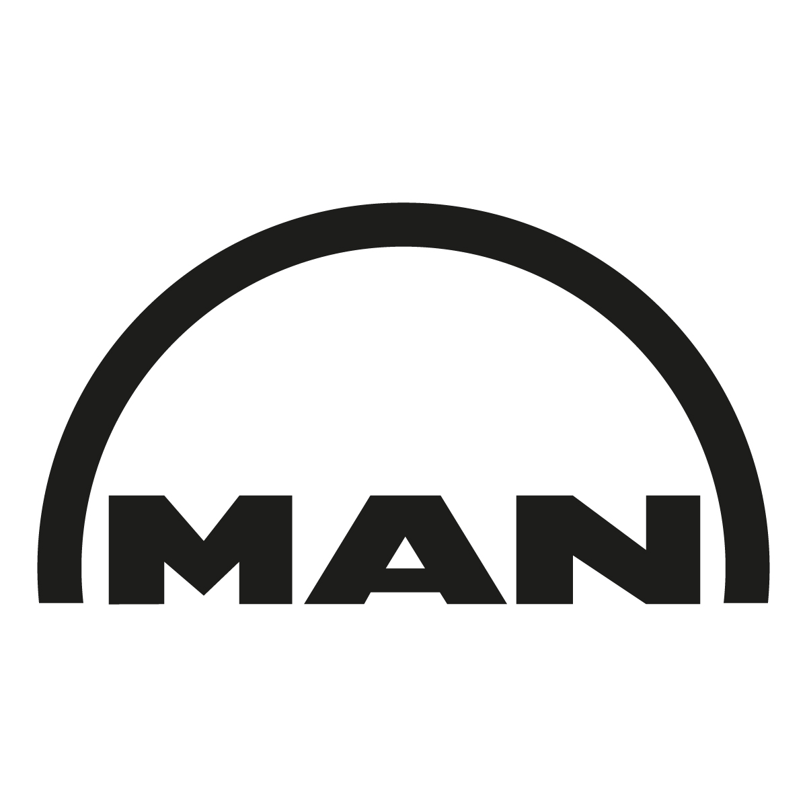
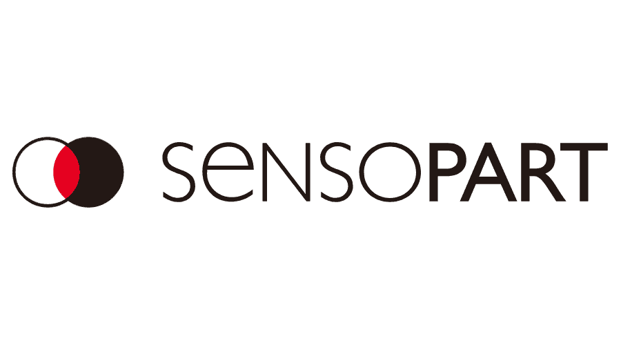

Trusted by Production Teams & Tier-1 OEMs Worldwide



We design, deploy, and validate advanced machine vision solutions that eliminate defects, automate inspection, and guarantee compliance.
Trusted by Production Teams & Tier-1 OEMs Worldwide


We don't just "mount cameras." We manage the entire machine vision development lifecycle to eliminate execution risk.
Before you invest, we mitigate your risk. We analyze your parts and environment to guarantee success.

Custom hardware layout schemes and software architecture builds tailored explicitly to your target production line parameters.
Optically stable structural camera brackets, protective environmental enclosures, and complete electrical panel layouts matching industrial schematics rules.
Custom UI/UX builds for operator inspection terminals, tracking variables across smart sensors or PC-based vision suites.
Seamless communication handshakes with native PLCs, field HMIs, and plant-wide MES tracking layers via Profinet, EtherNet/IP, or Modbus networks.
Mounting hardware components and tuning execution boundaries directly inside active plant assembly blocks.

We prove system metrics mathematically before sign-off, leaving zero room for measurement bias or inspection discrepancies.

Establishing strict operational baselines and master defect profiles for verification tracking.
Handover of electrical prints, system configuration code backups, full BOM details, and calibration sheets.
Providing real floor team guidance for quick variant changeovers and tier-1 system diagnostics.
Providing active local engineering support and remote link diagnostics right through launch sequences.
Hardware mounts are nothing without stable, optimized scripts and classification models. We support **native vision system programming** across all industry-standard environments.
Whether you require low-latency script customization inside custom PC-based algorithm setups or native block programming for stand-alone field sensors, our software engineers build clean, fast, and structured architectures.

VISOR Framework & Detection ToolingEngineered validation paths matching target manufacturing quality objectives.

Dynamic offset calculation tracking coordinates directly into motion trajectories for flexible robotic picking cell links.

High speed anomaly filters running inline to detect surface blemishes, missing features, or deviation profiles.

Robust data matrix extraction from direct part marked (DPM) castings, laser-etched panels, or curvilinear assembly spaces.
| Inspection Type | Common Operational Applications |
|---|---|
| Defect Detection | Surface scratches, cracks, dents, and cosmetic blemishes. |
| Guidance & Robotics | Pick-and-place, robot guidance (2D/3D), and part alignment matrix tracking. |
| Gauge & Metrology | Sub-micron dimensional measurements, thread inspection, and critical clearance checks. |
| Identification & Traceability | 1D/2D barcode reading, OCR (Optical Character Recognition), and OCV (Optical Character Verification). |
| Assembly Verification | Component presence/absence verification, structural seal profile integrity, and orientation tracking. |
Custom regulatory compliance and environmental hardening configurations matching target sector constraints.
Assembly verification loops, absolute component tracking trace-maps, and precise weld profile evaluations.
Blister pack cavity counting, medical vial cap seal testing, and rigorous validation profiles (FDA compliant tracking).
High-capacity label alignment checking, inline volume level scans, and total package seal continuity checks.
Surface mount PCB inspections, micro solder terminal profile checks, and component alignment offset grids.
Our operational integration approach targets structural risk mitigation and reliable throughput scaling.
We work directly with top platform environments (Cognex, Keyence, Basler, SensoPart, LMI, and Halcon) to engineer the absolute best-fit configuration matching your targets, rather than fitting your line to a singular restricted catalog.
We maintain active operations on the manufacturing floor until the formal statistical Gage R&R data proves your system configuration matches the accuracy metrics requested.
Our extensive hardware lab modeling cycles and feasibility pre-testing ensure floor installation milestones are clean, predictable, and fully planned around line availability constraints.
Talk to an automation engineer today. We will review your part drawings or samples and provide a preliminary feasibility assessment.